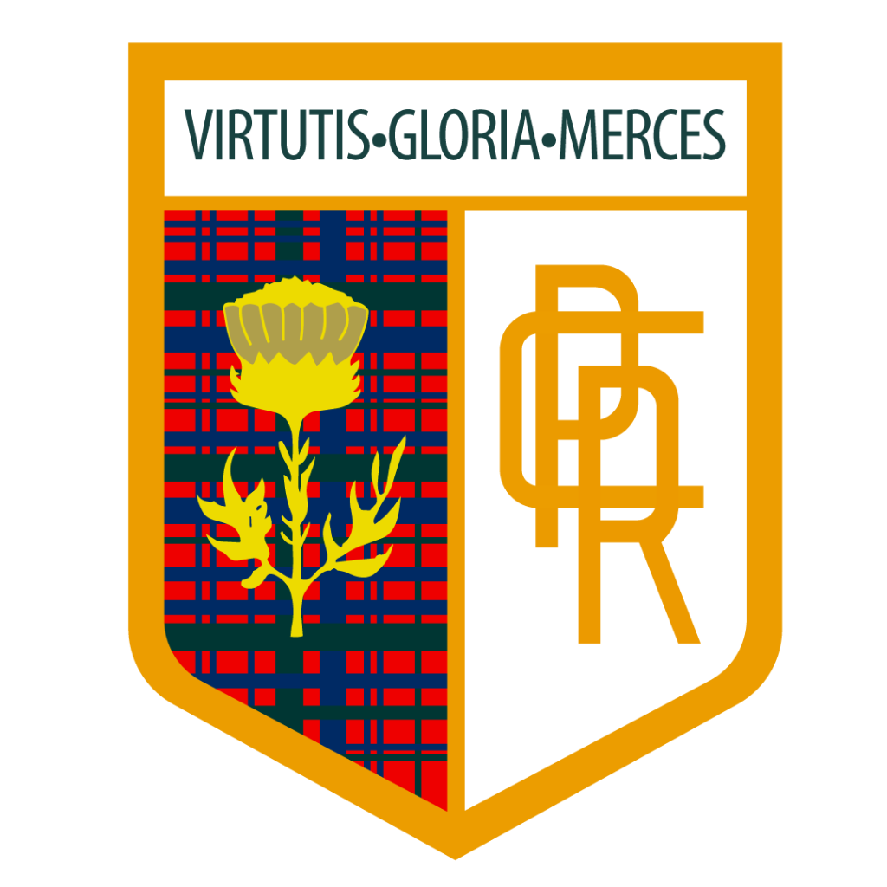

Inspección de Cuadrante

Diseñado con apertura tipo libro y formato compacto de mano (9,23 × 9,52 cm cerrado / 27,7 × 9,52 cm extendido), este folleto está concebido para entregarse en mano a cada familia durante su entrevista personalizada, transmitiendo los más de 50 años de prestigio de la institución y conectando instantáneamente con la plataforma digital de admisiones.
Superando las fallas del formato anterior (desperdicio de espacio en blanco, vencimiento de aniversarios y desconexión digital), la nueva pieza optimiza cada milímetro cuadrado.
La tapa se abre hacia la izquierda revelando en primera instancia la solapa histórica y el QR de admisión antes de desplegar los 3 niveles educativos.
Formato compacto (9,23 × 9,52 cm cerrado / 27,7 × 9,52 cm abierto) que rinde 2 folletos listos por pliego impreso sin desperdicio.
Reemplaza los sellos cerrados de 50 o 60 años por una marca atemporal continua que nunca vence, protegiendo el presupuesto escolar.
El código QR estratégico en la contracara interna traslada a los padres en 2 segundos a la solicitud de vacante en la landing web.
Explorá el recorrido físico exacto de apertura y lectura tal como lo experimentan las familias al recibir la pieza en mano.